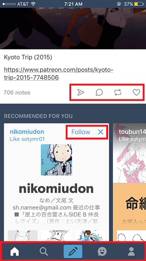

january 12 2017
user interface
or my subtle hate letter to icons
ENTRY 1 | INTERFACE
The first thing that popped into my head was the app I use the most: the Tumblr app. I feel like my evaluation of the user interface might be skewed because of how accustomed I am with the icons and the site but that would contribute to the effectiveness of the app/site.
Overall, the app is simple in visual design. It does not overwhlem with too many unlabeled or new icons (TALKING ABOUT YOU SNAPCHAT). For example, it has a different format for showing different information (recommended blogs are horizontally placed while already followed blogs scroll vertically). And if you want to follow a blog, you don't have to guess which icon because it spells the word out for you.
Starting from the top highlighted box, there are two icons that should be familiar to most social media users: (from the left) the heart and the reblog button. The next two icons however might not be familiar (although this is the only social media app besides Facebook). The speech bubble can be inferred as an icon that relates to talking to other users and that is true, however it's not a messaging system - the icon for that is at the bottom with a face. The arrow-looking icon on the top highlighted box is the one that works together with the messaging system. The user can send the post through the messaging system to another user. Other than that, the rest of the icons are effective in showing what it's meant to be used for.